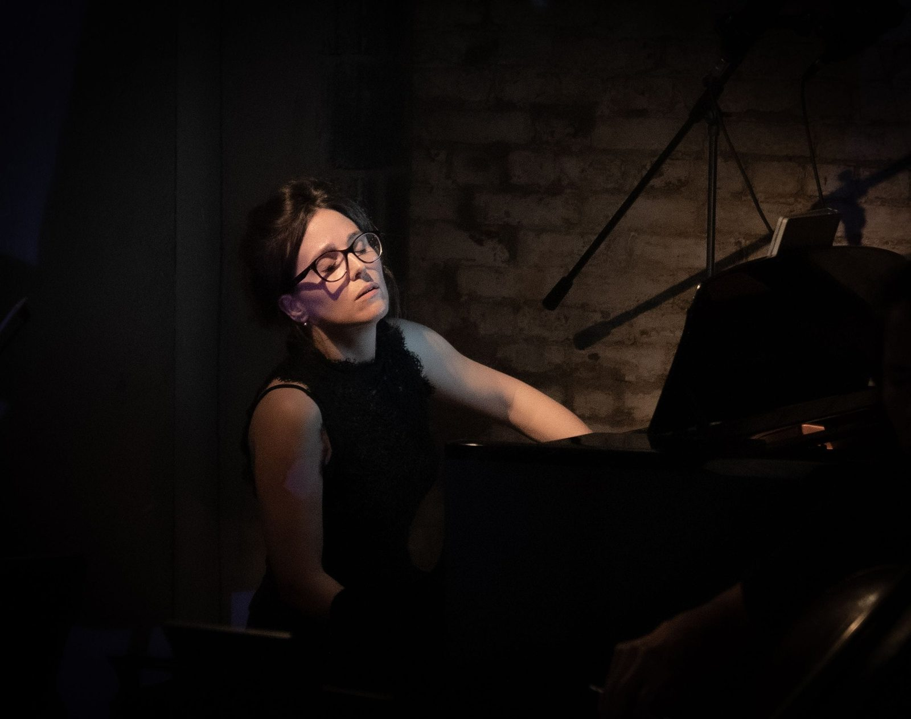

Trayectoria
Biografía breve
Josefina Urraca es una pianista española, codirectora de CreArtBox y del Festival ADAR. Estudió con Dmitri Bashkirov en la Escuela Superior de Música Reina Sofía de Madrid, y Mundo Clásico ha elogiado su manera de tocar por su mezcla de «introspección y abandono musical». Ha tocado en la Salle Cortot de París, el Auditorio Sony de Madrid y el Carnegie Hall de Nueva York, y su trabajo ha contado con el apoyo del New York State Council on the Arts y del Queens Council on the Arts.
Biografía media
Josefina Urraca es una pianista española, codirectora de CreArtBox y del Festival ADAR. Mundo Clásico ha elogiado su manera de tocar por su mezcla de «introspección y abandono musical»: un equilibrio entre precisión y riesgo emocional que define su trabajo tanto en el escenario como detrás de él. Ha tocado en la Salle Cortot de París, el Collège d'Espagne de la Cité Internationale Universitaire de París, el Auditorio Sony de Madrid y el Carnegie Hall de Nueva York, y su trabajo ha llegado a un público más amplio a través de la televisión y la radio españolas.
Se formó en la Escuela Superior de Música Reina Sofía de Madrid, donde estudió con Dmitri Bashkirov, y también en el Conservatorio de Salamanca, la École Normale de Musique «Alfred Cortot» de París y la Manhattan School of Music de Nueva York. Ha sido reconocida en concursos como INJUVE, el Concurso Internacional Ciudad de Carlet y el Savvy Musicians in Action International Competition, y su trabajo ha recibido el apoyo del New York State Council on the Arts, el NYC Department of Cultural Affairs, el Queens Council on the Arts y el Gobierno del Principado de Asturias.
En 2013, junto al flautista Guillermo Laporta, cofundó CreArtBox, y desde 2021 ambos codirigen el Festival ADAR en la Asturias rural, que lleva conciertos, encargos, encuentros con artistas e instalaciones site-specific a pueblos pequeños.
Biografía completa
Josefina Urraca es una pianista española, codirectora de CreArtBox y del Festival ADAR. Mundo Clásico ha elogiado su manera de tocar por su mezcla de «introspección y abandono musical»: un equilibrio entre precisión y riesgo emocional que define su trabajo tanto en el escenario como detrás de él.
Ha tocado en la Salle Cortot de París, el Collège d'Espagne de la Cité Internationale Universitaire de París, el Auditorio Sony de Madrid y el Carnegie Hall de Nueva York, entre otros. Su trabajo ha llegado además a un público más amplio a través de la televisión y la radio españolas.
En 2013, junto al flautista Guillermo Laporta, cofundó CreArtBox, un ensemble de música de cámara con base en Nueva York que funde la interpretación en directo con las artes visuales, la proyección y la puesta en escena. A lo largo de la última década ha llevado su dirección artística: diseñar programas, encargar obra nueva y tejer colaboraciones con compositores y artistas visuales. The New Yorker lo ha incluido entre sus recomendaciones de arte y música, y Time Out New York lo ha descrito como «un grupo dedicado a los eventos multidisciplinares».
Desde 2021 codirige con Laporta el Festival ADAR, un festival itinerante en la Asturias rural que entreteje conciertos clásicos, obra por encargo, encuentros con artistas e instalaciones site-specific en el paisaje de los pueblos pequeños. El festival se ha convertido en un modelo de cómo la creación contemporánea puede revitalizar el patrimonio rural.
Se formó en la Escuela Superior de Música Reina Sofía de Madrid, donde estudió con Dmitri Bashkirov, y su formación pasó también por el Conservatorio de Salamanca, la Universidad de Alcalá de Henares, la École Normale de Musique «Alfred Cortot» de París y la Manhattan School of Music de Nueva York. Entre sus otros maestros están Maria João Pires, Ferenc Rados, Patrín García-Barredo, Josep Colom, Claudio Martínez-Mehner, Kennedy Moretti, Eldar Nebolsin, Marc Silverman, Márta Gulyás y Frank Wibaut.
A lo largo de quince años su trabajo ha recibido el apoyo de instituciones como el New York State Council on the Arts, el NYC Department of Cultural Affairs, la Amphion Foundation, la Copland Foundation y el Alice M. Ditson Fund, el Gobierno del Principado de Asturias, el Queens Council on the Arts, la Embajada de España, Caja Madrid, la Fundación Luis Galve, la Fundación Albéniz y Caja Rural. Ha sido reconocida en concursos como el Savvy Musicians in Action International Competition, INJUVE, Montehermoso Creación Contemporánea, el Concurso Internacional Ciudad de Carlet y los premios del Rotary Club.
Nacida en una familia de músicos profesionales en Palencia, reparte su vida entre Nueva York y Leiguarda, un pueblo pequeño de Asturias, donde vive con su marido Guillermo y sus hijos Eliot y Emilia.
Estas tres biografías son las que publica CreArtBox y pueden usarse tal cual. Para otra versión, o para una más larga: josefinaupd@gmail.com
Prensa
-
Introspección y abandono musical.
Mundo Clásico · sobre su manera de tocar -
Critics top pick for the best music, art and theatre.
The New Yorker · sobre CreArtBox -
A new ensemble devoted to multidisciplinary events.
Time Out · sobre CreArtBox -
A wholly authentic, visually and aurally compelling experience.
Broadway World · sobre CreArtBox